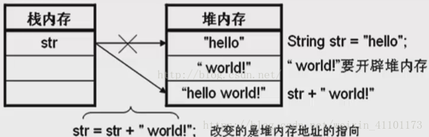
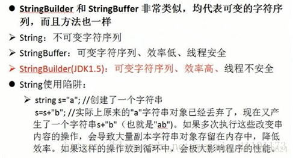

原文连接:https://www.cnblogs.com/wulei6369/p/11721290.html
String 和 StringBuffer区别
字符串广泛应用 在Java 编程中，在 Java 中字符串属于对象，Java 提供了 String 类来创建和操作字符串。
需要注意的是，String的值是不可变的，这就导致每次对String的操作都会生成新的String对象，这样不仅效率低下，而且大量浪费有限的内存空间。我们来看一下这张对String操作时内存变化的图：

我们可以看到，初始String值为“hello”，然后在这个字符串后面加上新的字符串“world”，这个过程是需要重新在栈堆内存中开辟内存空间的，最终得到了“hello world”字符串也相应的需要开辟内存空间，这样短短的两个字符串，却需要开辟三次内存空间，不得不说这是对内存空间的极大浪费。为了应对经常性的字符串相关的操作，谷歌引入了两个新的类——StringBuffer类和StringBuild类来对此种变化字符串进行处理。
当对字符串进行修改的时候，需要使用 StringBuffer 和 StringBuilder 类。
和 String 类不同的是，StringBuffer 和 StringBuilder 类的对象能够被多次的修改，并且不产生新的未使用对象。
StringBuilder 类在 Java 5 中被提出，它和 StringBuffer 之间的最大不同在于 StringBuilder 的方法不是线程安全的（不能同步访问）。
由于 StringBuilder 相较于 StringBuffer 有速度优势，所以多数情况下建议使用 StringBuilder 类。然而在应用程序要求线程安全的情况下，则必须使用 StringBuffer 类。
三者的继承结构

三者区别:

小结：（1）如果要操作少量的数据用 String； (String str=null,另外两个不行)
（2）多线程操作字符串缓冲区下操作大量数据 StringBuffer；
（3）单线程操作字符串缓冲区下操作大量数据 StringBuilder。
StringBuffer和StringBuilder都要用构造函数创建一个字符串对象